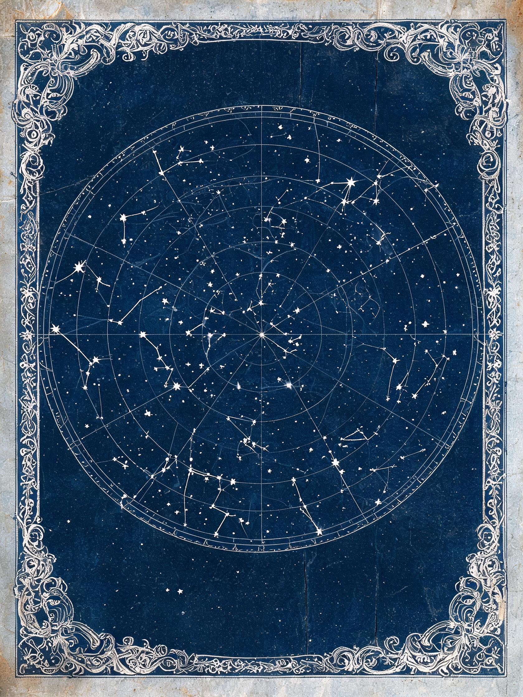
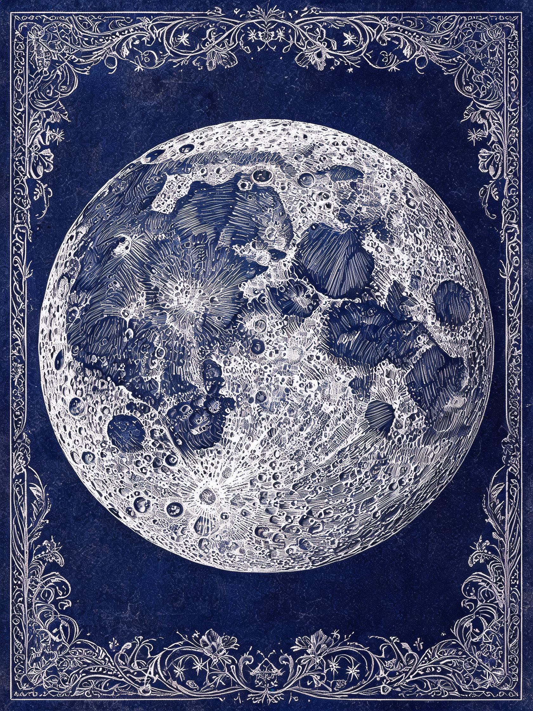
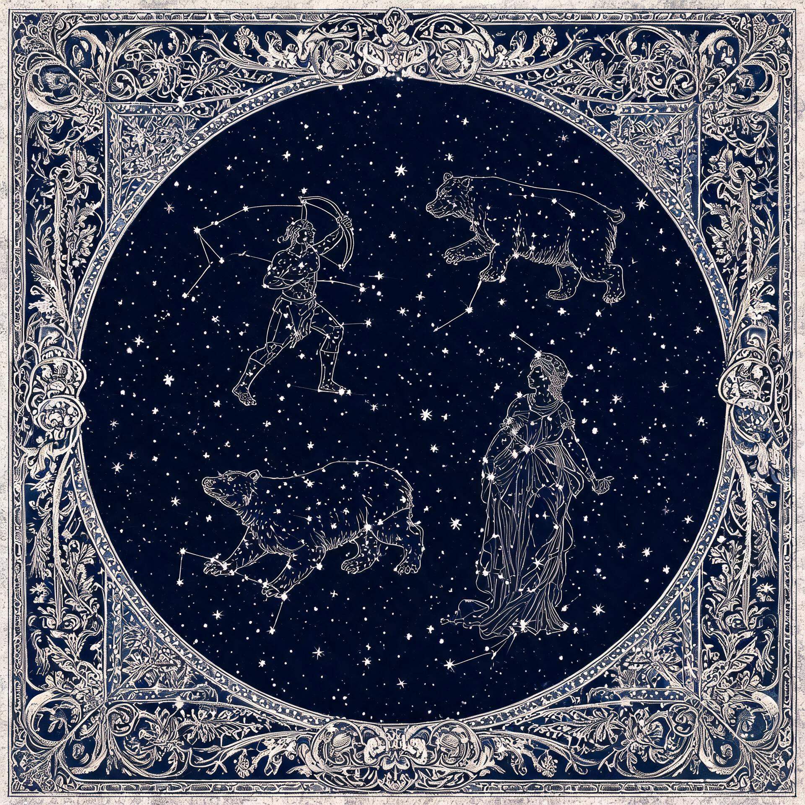
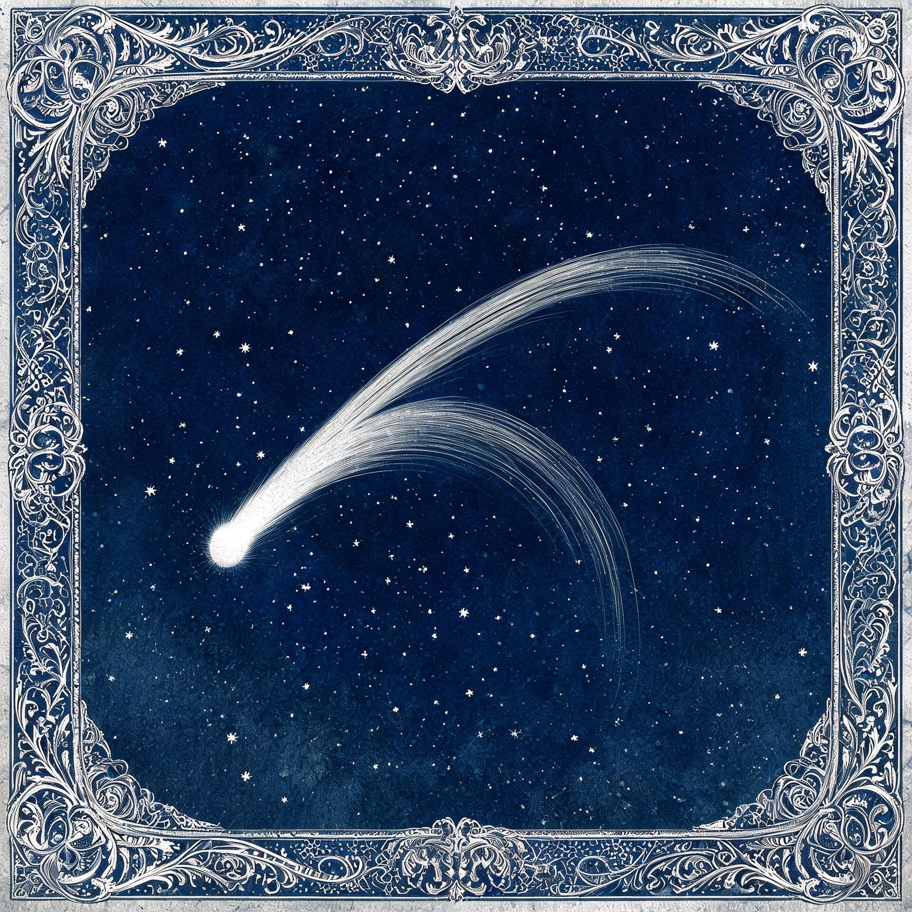
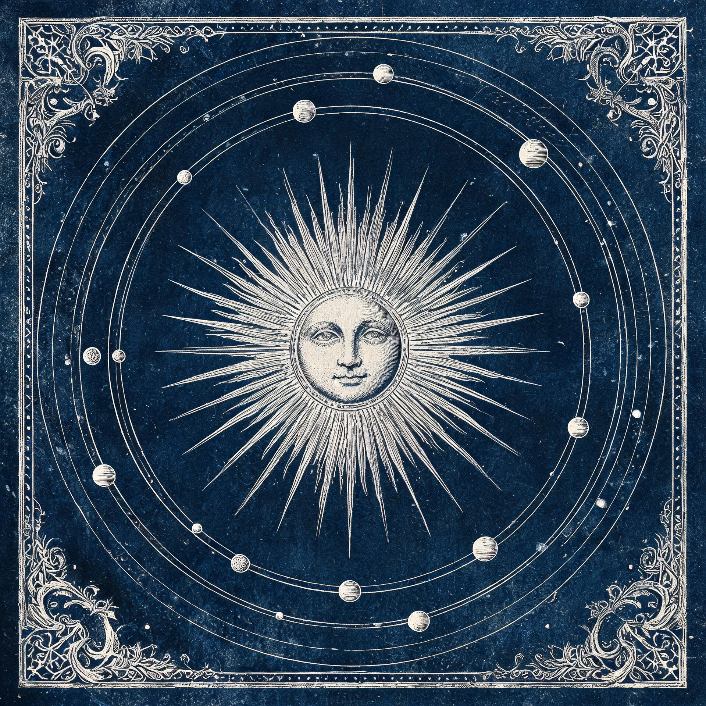
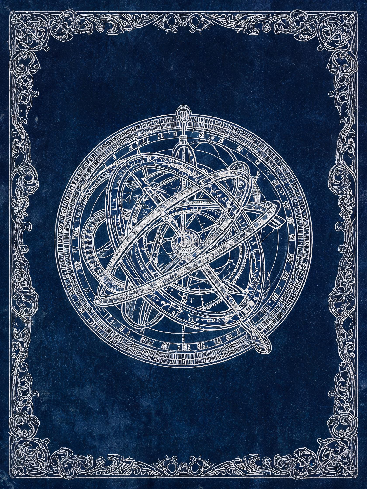

Plates
Fifteen years of engraving on copper, printed as it was pulled: the Meridian collection holds the society's own plates alongside the instruments that measured them. Six are on the wall for the autumn show.






How a plate is drawn
A plate begins with a sight taken from the roof and a list of stars already agreed with the instrument makers. The list matters more than the drawing. Once a star is fixed on the copper its position cannot be adjusted without cutting the plate again, so the society worked from the published catalogue of the day and wrote the reference into the margin of every proof.
The plate on the north wall carries twenty named stars. Their positions, brightness and colours are quoted below as they stand in the modern catalogues, so a visitor can hold the engraving beside the measurements it was cut from and see how close a hand-guided burin came to the numbers.
The allegorical figures between the stars are the engraver's own and follow no catalogue at all. Vaught drew them straight onto the copper as line sets, which is why the figures run across the field rather than stopping at a boundary.
The engraved sheet
Six plates are on the wall and thirty-five remain in the plan chest, printed but not framed. Each is pulled on laid paper from the original copper, which is why the later impressions carry the scratches the earlier ones do not.
Handling copies are kept at the desk for the plates that are too large for the wall. Impression numbers run in the order the plates were cut rather than the order they are shown, so the room is not a chronology.
The reference stars
The twenty named stars on the planisphere, quoted from the catalogues rather than from the engraving. Positions are for the epoch J2000; right ascension is given in hours, minutes and seconds and declination in degrees and arcminutes.
| Star | Constellation | HR | RA (J2000) | Dec (J2000) | V mag | Spectral type | Distance (ly) |
|---|---|---|---|---|---|---|---|
| Sirius | Canis Major | 2491 | 06h 45m 08.9s | −16° 42′ 58″ | −1.46 | A1 V | 8.6 |
| Canopus | Carina | 2326 | 06h 23m 57.1s | −52° 41′ 44″ | −0.74 | A9 II | 310 |
| Arcturus | Boötes | 5340 | 14h 15m 39.7s | +19° 10′ 57″ | −0.05 | K1.5 III | 36.7 |
| Vega | Lyra | 7001 | 18h 36m 56.3s | +38° 47′ 01″ | 0.03 | A0 V | 25.0 |
| Capella | Auriga | 1708 | 05h 16m 41.4s | +45° 59′ 53″ | 0.08 | G8 III + G0 III | 42.9 |
| Rigel | Orion | 1713 | 05h 14m 32.3s | −08° 12′ 06″ | 0.13 | B8 Ia | ≈ 860 |
| Procyon | Canis Minor | 2943 | 07h 39m 18.1s | +05° 13′ 30″ | 0.34 | F5 IV–V | 11.5 |
| Achernar | Eridanus | 472 | 01h 37m 42.8s | −57° 14′ 12″ | 0.46 | B6 Vep | 139 |
| Betelgeuse | Orion | 2061 | 05h 55m 10.3s | +07° 24′ 25″ | 0.50 | M1–2 Ia–Iab | ≈ 548 |
| Altair | Aquila | 7557 | 19h 50m 47.0s | +08° 52′ 06″ | 0.76 | A7 Vn | 16.7 |
| Aldebaran | Taurus | 1457 | 04h 35m 55.2s | +16° 30′ 33″ | 0.86 | K5 III | 65.3 |
| Spica | Virgo | 5056 | 13h 25m 11.6s | −11° 09′ 41″ | 0.97 | B1 III–IV | 250 |
| Antares | Scorpius | 6134 | 16h 29m 24.5s | −26° 25′ 55″ | 1.06 | M1.5 Iab–Ib | ≈ 550 |
| Pollux | Gemini | 2990 | 07h 45m 19.0s | +28° 01′ 34″ | 1.14 | K0 III | 33.8 |
| Fomalhaut | Piscis Austrinus | 8728 | 22h 57m 39.0s | −29° 37′ 20″ | 1.16 | A3 V | 25.1 |
| Deneb | Cygnus | 7924 | 20h 41m 25.9s | +45° 16′ 49″ | 1.25 | A2 Ia | ≈ 2600 |
| Regulus | Leo | 3982 | 10h 08m 22.3s | +11° 58′ 02″ | 1.35 | B8 IVn | 79.3 |
| Castor | Gemini | 2891 | 07h 34m 36.0s | +31° 53′ 18″ | 1.58 | A1 V | 51 |
| Polaris | Ursa Minor | 424 | 02h 31m 49.1s | +89° 15′ 51″ | 1.98 | F7 Ib | 433 |
Positions, visual magnitudes and spectral types follow the Yale Bright Star Catalog as catalogued in VizieR V/50 and are quoted here from the corresponding SIMBAD object records. Distances are parallax based; the four supergiants (Rigel, Betelgeuse, Antares, Deneb) carry a wide uncertainty and are marked with an approximation sign. Betelgeuse, Antares and Polaris are variable, so their magnitudes are given as mean values.
Deep sky objects
Six objects beyond the stars are shown on the plates and on the ceiling of the Long Room. Their positions and distances are taken from the same catalogues.
| Object | Type | Constellation | RA (J2000) | Dec (J2000) | V mag | Distance |
|---|---|---|---|---|---|---|
| M31, Andromeda Galaxy | Spiral galaxy (Sb) | Andromeda | 00h 42m 44.3s | +41° 16′ 09″ | 3.44 | 2.50 Mly |
| M42, Orion Nebula | Emission nebula | Orion | 05h 35m 17.3s | −05° 23′ 28″ | 4.0 | 1 344 ly |
| M45, the Pleiades | Open cluster | Taurus | 03h 47m 24s | +24° 07′ | 1.6 | 444 ly |
| M13, Hercules Cluster | Globular cluster | Hercules | 16h 41m 41.2s | +36° 27′ 36″ | 5.8 | 22 200 ly |
| M44, the Beehive | Open cluster | Cancer | 08h 40m 24s | +19° 40′ | 3.7 | 577 ly |
| M57, the Ring Nebula | Planetary nebula | Lyra | 18h 53m 35.1s | +33° 01′ 45″ | 8.8 | 2 570 ly |
Object coordinates, types and magnitudes are quoted from SIMBAD; distances follow NASA/IPAC NED for the galaxies and the cluster parallaxes published with each object record. Distances to open clusters vary by a few per cent between catalogues.